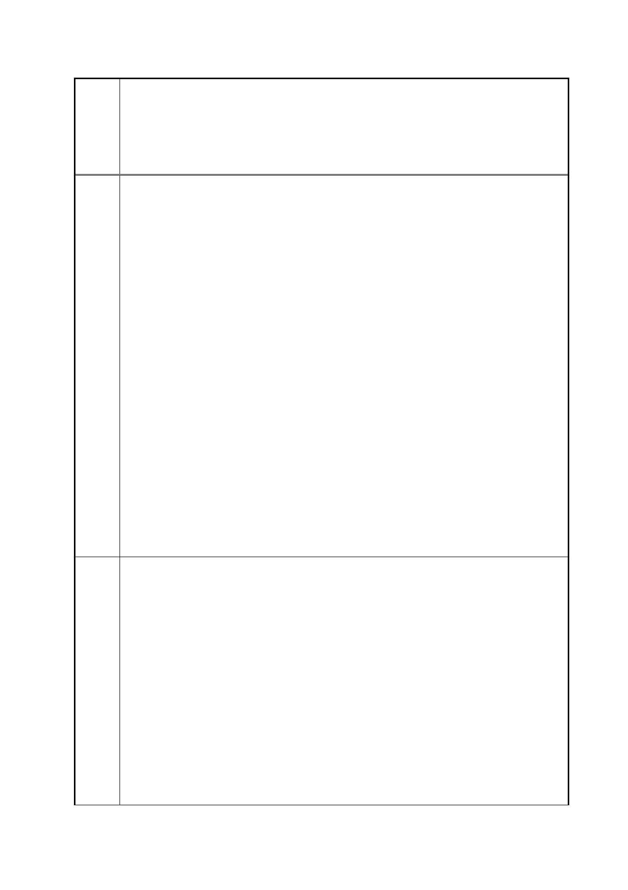

臺北市都市計畫委員會 公民或團體陳情意見綜理表
「變更臺北市信義區逸仙段二小段 33 地號等 21 筆土地（原臺北機廠）
案
名
工業區為創意文化專用區、特定專用區、道路及綠地用地主要計畫案」
及「擬定臺北市信義區逸仙段二小段 33 地號等 21 筆土地（原臺北機
廠）創意文化專用區、特定專用區、道路及綠地用地細部計畫暨劃定
都市更新地區計畫案」
所謂的美術館和文創園區已經成為炒作土地利益的大利多，國家整體
的文化政策處在迷途上，而開發導向的城市建設也正在毀損這個土地
上最有價值的工業文明的真實記錄！儘管視覺藝術界對於一座國家
級的當代藝術館渴望已久，但文化任務必須是保存和創新雙向進行
的，因此我們堅決反對政府以建美術館之名行炒作之實；更反對政府
以文創之名，罔顧保存史地文脈的責任，放任商業利益的巧取豪奪！
台北機廠本身內外條件不但不適合成為美術館，視覺藝術界更認為這
是虛招。華山文創園區和松山菸廠的案例，都是以文創之名卻一昧地
向商業和消費傾斜，縱容私人營利者嚴重切割工業文明的完整紀錄！
而一旦完成了讓予企業的轉手過程，創作者是租用不起已經縉紳化的
文創空間的。更令藝術界擔憂，接著的兩案服務貿易協定，讓藝文場
所的經營權也拱手讓出，台北機廠的美術館和文創園區計畫，是不是
一場文化的木馬屠城記呢？
視盟呼籲政府，停止這個毀壞工業史蹟和偽文化園區的雙重謬誤政
策，因為它既不符合公共利益、不是藝術界對文化館設的需求，更不
是我們對文化建設之公義價值的想像！而在國家如此缺乏文化資產
保留的觀念、缺乏對都市建設的前瞻眼光之際，我們更要求政府對於
公共場域的規劃，應該充分地公開討論，讓專業者和使用者、讓有瞻
觀的公民們一起架構對國家和城市的文化和地貌想像！
停止雙重謬誤的政策－視覺藝術界反對臺北機廠成為美術館與文創
園區！中華民國○○藝術協會（視盟）聲明
近日，交通部和台鐵傳出將台北機廠建成美術館和文創園區，不但是
為了台鐵的償債計畫，更是由行政院長江宜樺親自下達的指示：”台
鐵局自 67 至 101 營運虧損累積債務有 1220 億元“，而”雙子星、台
北機廠還有南港調車場三大案預估開發收益將可達到新台幣 1032 億
元。因而指示台鐵”積極處理”，並要台北市”盡力協助”，爭取最大開
發效益”。
這個決策不但讓鐵道迷非常錯愕，讓都市計劃專家和文化古蹟專家感
到異常荒謬，也讓視覺藝術界再度感受到假藝術之名，所謂的美術館
和文創園區已經成為炒作土地利益的大利多，國家整體的文化政策處
在迷途上，而開發導向的城市建設也正在毀損這個土地上最有價值的
工業文明的真實記錄！儘管視覺藝術界對於一座國家級的當代藝術
第 16 頁/共 154 頁